Inzichten uit
de studio.
Praktische tips en heldere uitleg over een website laten maken, SEO, fotografie en online ondernemen. Geschreven door de mensen die je site bouwen, zonder vakjargon.
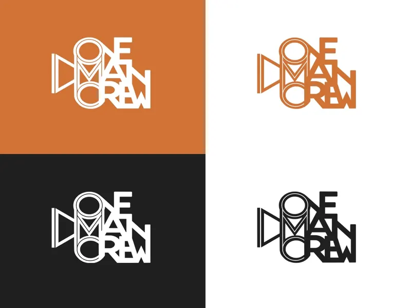
BrandingLogo laten maken in Purmerend: kosten en proces
Welk type logo past bij je bedrijf, wat kost een logo en huisstijl en hoe werkt het ontwerpproces bij een lokale studio? Een eerlijke gids.
Lees het artikel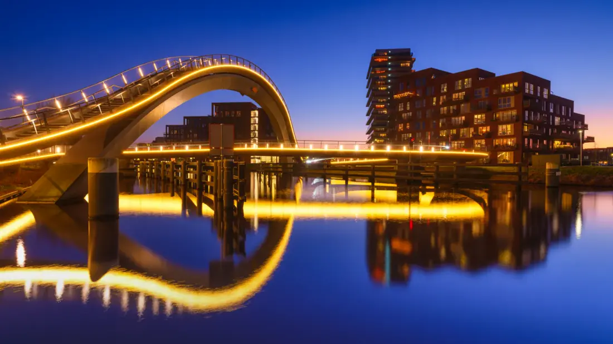
LokaalLokale SEO in Purmerend: zo kom je hoger in Google
Een eerlijk stappenplan voor ondernemers: van je Google Bedrijfsprofiel tot reviews en lokale content, zodat klanten uit de buurt je vinden.
Lees het artikelKlaar voor het hoogseizoen? Zo bereid je je website voor op meer bezoekers
Snelheid, mobiel, duidelijke acties en actuele info: zo maak je je website klaar voor een piek aan bezoekers in je drukste maanden.
Lees het artikel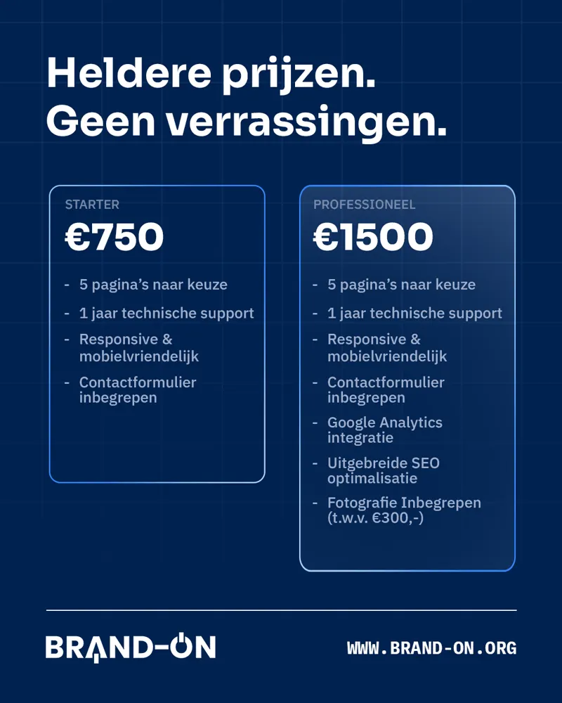
PrijsgidsHoeveel kost een website voor een mkb-bedrijf?
Een complete prijsgids: wat een professionele website voor het MKB gemiddeld kost, waar je voor betaalt en hoe je verborgen kosten voorkomt.
Lees het artikel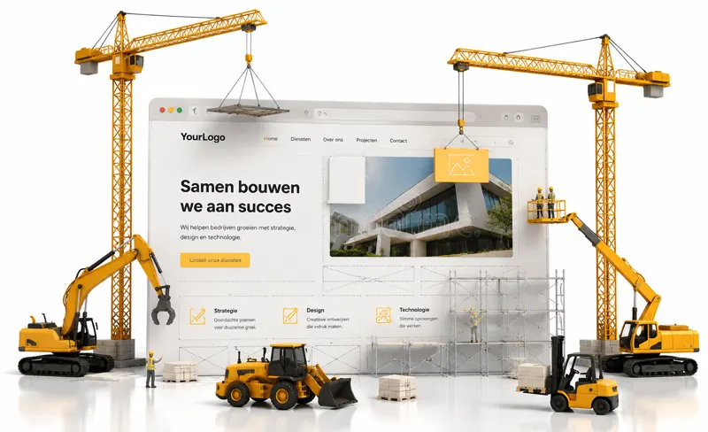
BrancheWebsite voor een eenmanszaak in de bouw: wat moet erop staan?
Van projectfoto's tot offerteknop en lokale SEO: de complete checklist voor een bouwwebsite die echt opdrachten oplevert.
Lees het artikel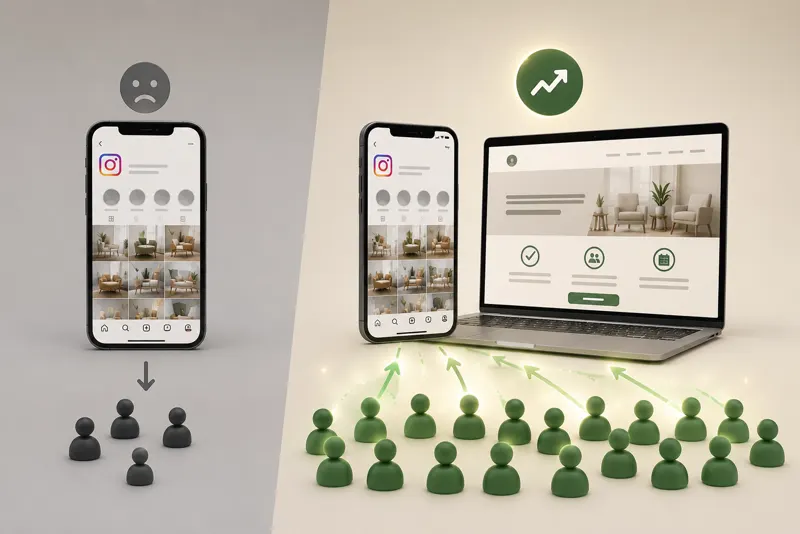
Online ondernemenWaarom een Instagram-pagina geen vervanging is voor een website
Alleen social media voor je bedrijf? Ontdek wat je daardoor misloopt aan klanten en waarom een eigen website onmisbaar is.
Lees het artikelWebsite-checklist voor ondernemers in Purmerend
Hoe je als ondernemer in Purmerend en Waterland online opvalt tussen de concurrentie en klanten uit de buurt bereikt.
Lees het artikel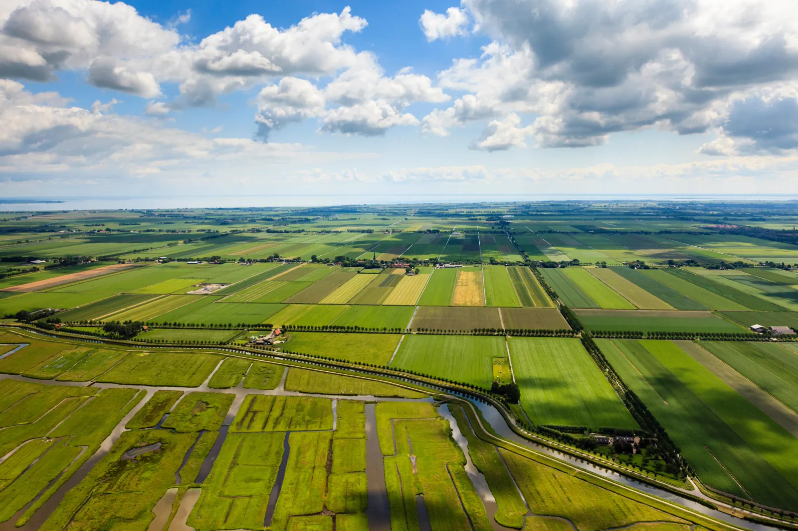
LokaalWebsite laten maken in de Beemster: wat lokale ondernemers moeten weten
Hoe je als ondernemer in de Beemster online gevonden wordt door klanten uit de buurt, en wat een lokale website kost.
Lees het artikel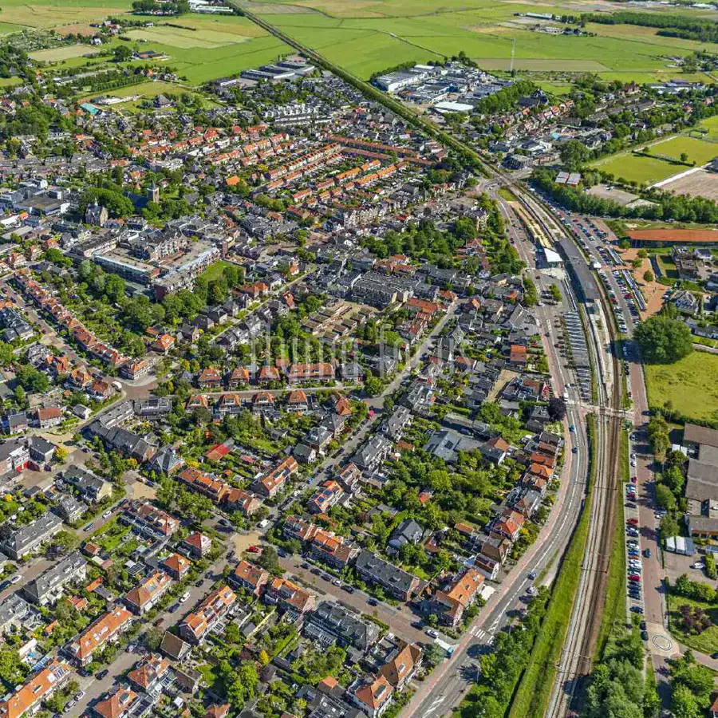
LokaalWebsite-checklist voor ondernemers in Castricum
Hoe je als ondernemer in Castricum zowel je vaste klanten als bezoekers van de kust online bereikt.
Lees het artikel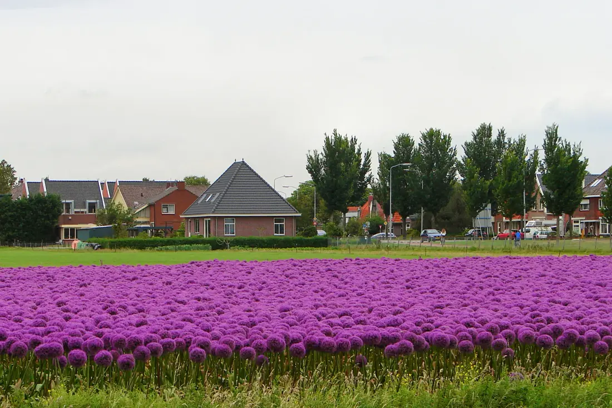
LokaalWebsite-checklist voor ondernemers in Limmen
Hoe je als ondernemer in Limmen en de bollenstreek online gevonden wordt door klanten uit de buurt.
Lees het artikel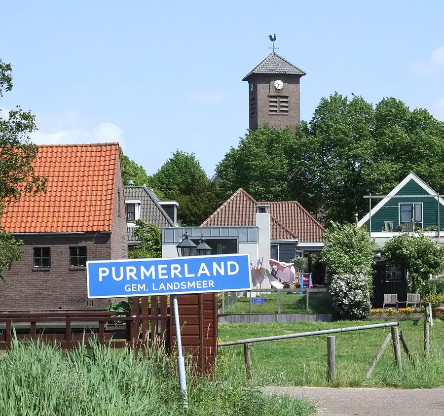
LokaalWebsite laten maken in Purmerland: wat lokale ondernemers moeten weten
Hoe je als ondernemer in Purmerland online opvalt in een dorp met nauwelijks concurrentie, vlak bij Purmerend.
Lees het artikel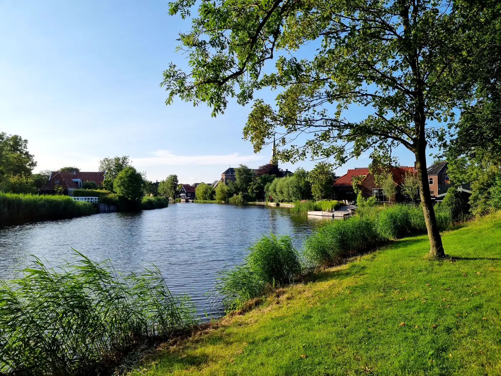
LokaalWebsite laten maken in Ilpendam: wat lokale ondernemers moeten weten
Hoe je als ondernemer in Ilpendam klanten uit heel Waterland bereikt door online goed vindbaar te zijn.
Lees het artikel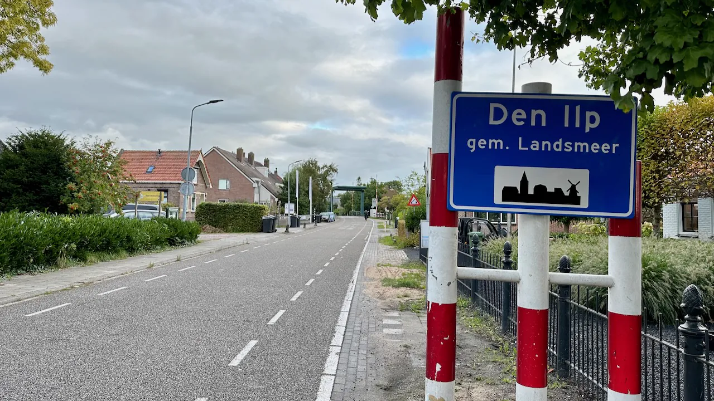
LokaalWebsite laten maken in Den Ilp: wat lokale ondernemers moeten weten
Hoe je als zzp'er of klein bedrijf in Den Ilp de best vindbare in de buurt wordt, met sterke lokale SEO.
Lees het artikel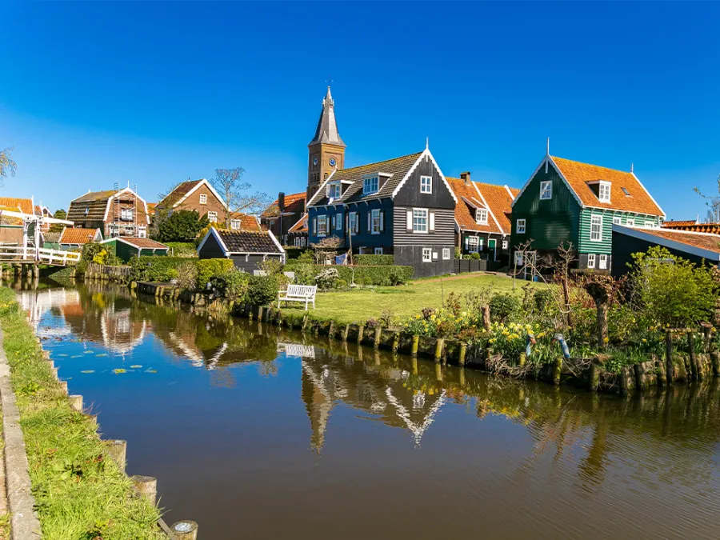
LokaalWebsite laten maken in Neck: wat lokale ondernemers moeten weten
Hoe je als ondernemer in Neck en de Wijdewormer online gevonden wordt door klanten uit de buurt.
Lees het artikelGeen artikelen in deze categorie.
Laten we jouw merk
aanzetten.
Vertel ons over je plannen. Je krijgt binnen één werkdag een persoonlijk antwoord, geen verkooppraatje.